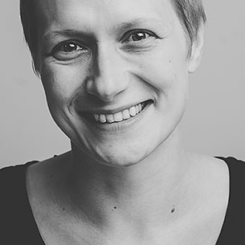
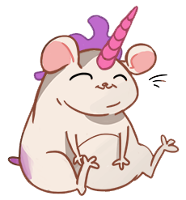
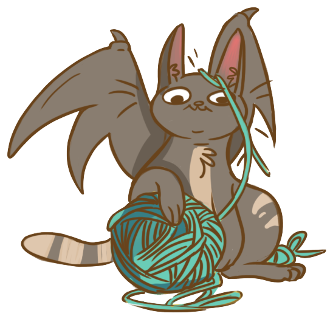

Looking for top-notch Ruby and JavaScript programmers?
Choose world-class developers with impressive open-source record. Choose
direct communication over managemental overhead. Choose paying for actual
work done.
Cut off all the fat. Choose Rebased.
The Team
Tomash
Tomasz Stachewicz
Ruby developer since 2005, went pro in 2007. Likes less-popular languages, especially D. Founder of Warsaw Ruby Users Group.
chastell
Piotr Szotkowski
Professional Ruby developer for fun, assistant professor at Warsaw University of Technology by passion – or the other way around. Awesome at both.
Zły
Krzysztof Białek
Psychologist who prefers working with code over other people minds. Besides Ruby he specializes in Android apps and responsive CSS.
Sarniak
Łukasz Sarnacki
Ruby and Javascript professional, Łukasz likes unusual databases (Neo4j, Postgis) and contributes to Rails, Travis-CI and other OS projects.

Turbo
Katarzyna Turbiasz-Bugała
Expert in search engines and Rails Girls alumnae, Katarzyna uses her years of experience as a researcher to turboboost her Ruby skills.
Ravbaker
Rafał Piekarski
Worked for a decade as professional rubyist, with experience including information retrieval systems, concurrent programming and JRuby.
Yeti
Kamil Grabowski
Devops expert (Ansible, Docker) who codes in Ruby since 2008 after his share of x86 assembler, C and PHP.
Monika
Monika Glier
Web developer with a knack for algorithms and data structures. Judgemental about code, in a good way.
Idengager
Kasia Jarmołkowicz
Rails Girls organiser and activist. Switched from microbiology to microcomputer programming.
K3rni
Krzysztof Zych
10 years of experience spanning from C to Python to Ruby, still experimenting with new languages. Undercover unix neckbeard and amateur drummer.
Gajewsky
Marcin Gajewski
Brewer of high quality code. Likes working with big data sets and distributed architectures.
Jumski
Wojciech Majewski
Self-taught developer with extensive experience, great Ruby skills, soft spot for clojure and programming sound synthesizers.
Eraden
Adrian Woźniak
Full-time Ruby developer since 2012, Adrian codes in many languages, including C and Lua. Fan of functional programming and immutable data structures.
Adam
Adam Okoń
Passionate polyglot software engineer, open source enthusiast, co-organizer of Tricity Ruby User Group, with a soft spot for Elixir language.
Wafcio
Krzysztof Wawer
Full-time Ruby developer and open source contributor since 2011, a true expert in everything backend-related.
Wozane
Aneta Woźniak
Knitting code in both Ruby and Python and enjoying every minute of it.
Skopu
Sebastian Skopp
Professional rubyist since 2012, loves developing early-stage startups.
Basia
Basia Litwińska
Ember.js and Rails expert since 2014, fan of trains, especially EN57 in "Tiger" paint scheme.
Marcin
Marcin Drozd
Ruby developer, who likes tinkering with other technologies, became a programmer because of the love for learning, problem-solving and creating.
Laura
Laura Paakkinen
Ruby developer.
Kala
Kamila Wyroślak
"Programmers and programming projects are easy to take care of when you have experience with freight ships being on fire in the middle of an ocean."
Żywiec
Łukasz Rzewuski
The Manager of this happy bunch.
Ideczka
Ida Pawłowicz
Madness compacted into travel-size.
Hodor
Hodor The Cat
Ever saw a cat contributing to open-source projects? Now you have!
Projects
Large e-commerce site integrated with external ERP system.
Enterprise SEO Analytics provider, processing gigabytes of data every day.
High-profile conference: public site and backoffice app integrated with CRM and ticketing systems.
Construction site management with issue tracking and notification, integrated with blueprints.
Loyalty program backend for gas stations network.
Company resource analytics for internal (HR) and external (sales) use.
Open Source
Active Admin
Currently our favourite tool for quickly creating administration backends in Rails applications.

Bogus
Bogus aims to make your unit tests more reliable by ensuring that you don't stub or mock methods that don't actually exist in the mocked objects.
Crystal
A compiled and fast programming language with Ruby-inspired syntax.

Minitest
Minitest provides a complete suite of testing facilities supporting TDD, BDD, mocking, and benchmarking.
Pactflow
The first contract-testing platform for collaborating on + testing distributed systems. Pact + Spring cloud Contracts
Reek
Code smell detector for Ruby
Rubocop
A Ruby static code analyzer and formatter, based on the community Ruby style guide.
Ruby
Our beloved Ruby ❤️
Ruby on Rails
The framework that doesn't need introduction, used by us in most of the projects.
Rust
The Rust Programming Language
Sequel
The Database Toolkit for Ruby
Spree
The e-commerce Rails engine we all love to work with (and contribute to).
Tolk
Tolk is a web interface for doing i18n translations packaged as an engine for Rails 4 applications
Travis CI
Continuous integration loved by open-source community. That includes us!
Trix
Want to include Basecamp's awesome Trix WYSIWYG editor in your Ruby on Rails application? You've come to the right place!
Community
WRUG
Warsaw Ruby Users Group was founded in 2008 by our own Tomash and Mike Lee and remains one of the largest regular Ruby developers meetup with 40-60 developers attending each meetup.
Rails Girls
Sponsored and supported by Rebased since the first edition of Rails Girls Warsaw, we are commited to sustaining and growing this great initiative, not only in Warsaw edition. Besides sponsoring and coaching, Chastell and Tomash wrote the new Rails Girls programme and became coaches of Rails Girls Summer of Code teams that work in Warsaw.
Events sponsored and supported by Rebased
Rails Girls Warsaw
Rails Girls Tricity
Rails Girls Krakow
Rails Girls Silesia
KRUG
TRUG
SRUG
WRUG
EuRuKo 2017
PolyConf 2017
Do Nasadzenia
Now We Can Work With You.
Rebased sp. z o.o.
ul. Edwarda Jelinka 48,
01-646 Warszawa
Poland
ul. Topolowa 35/3
31-512 Kraków
Poland
al. Niepodległości 807/5
81-810 Sopot
Poland


 Do Nasadzenia
Do Nasadzenia